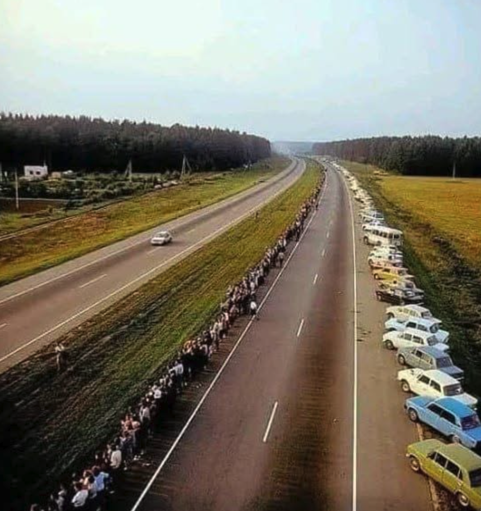

1. Participation in the discussion
This class is discussion heavy. Each class meeting, we will have a discussion about the readings assigned for that day.
You are responsible for doing the assigned readings thoroughly and coming to class prepared to share your own opinions about them and to listen fully to the opinions of others. Since some weeks have more reading than others, please plan ahead so that you can stay up to date. You should always bring the readings with you, either in paper or electronic form, so that we can look at them together. You will be evaluated on your participation each time class will meet. Pop-presentations: I might ask individual students to give a short report (5-10 minutes) on one of the readings assigned and lead a brief discussion on it.
I ask you to participate not simply so you can prove that you are prepared for class, but because I believe that discussing materials in a group setting is an essential part of the learning process. For learning to be active, everyone must talk as well as listen. That doesn’t mean that you always need to have something profound to say, but it does mean that you should always be prepared to share a question, insight, or comment with the class. Everyone must do the readings and contribute to the discussion in order for the course to succeed.
2. Team Presentation about one of the Nations (either Eastern European, Central Asian or the one in the Caucasus

3. Final paper, Reports and a Presentation about your Project
This will be a 9-10 page-long essay that addresses the following question: what is one of the major challenges that Russia/Eastern Europe/Eurasia is facing today?
To approach this question, you first need to decide what country in the region you want to focus on. Then, you need to start reading news about this country.
Set up a day and time in your week when you will spend 1 hour reading the news about this country in major US and/or international journals (depending on the languages you feel comfortable reading in). When you read the new, take notes on the issues and topics of debate that you are reading about. Every two weeks, you should write a brief report on what you have read (and submit it for my review on Blackboard – below you will learn more about this report). In your final paper, you will use your weekly reports to produce a coherent, original research paper that identifies and analyzes one major challenge your selected country is facing today.
Examples of major challenges might include immigration, the environmental crisis, terrorism, homophobia, anti-Semitism, etc. Independently of the country you select, your paper should make an analytic argument. It should use press coverage coming from more than one newspaper or website to articulate your own argument.
In working on your final paper, you will follow the following steps:
- prepare 5 news reports and submit them on Blackboard every week on Tuesday by 11:00 am, staring from September 8 (first report due) and ending on October 27 (last report due). Your reports should be short (1-2 pages each) and focus either on a specific event that has occurred that week or on a specific issue that has been debated in the media and that pertains to the country you selected.
I am looking for
1. a clear summary of the event or issue under discussion;
2 a contextualization of the event or issue (this means giving background information on any aspect of the event/issue, including its historical roots and its ramifications);
3. a critical analysis of how the event/issue is presented in the specific news source you have read; and
4. significant quotes.
Please remember that these reports will be crucial when you write your final paper.
I will take a point off your rough draft’s grade for each weekly report that you either have not submitted, submitted late, or written without following the requirements outlines above.
In addition, each class meeting, I will ask a few students to talk about their reports and share with the rest of the group what they have learned that week. These mini-presentations will be the starting points for in-class discussions. They will count towards your participation but not exempt you from actively participating in the discussion of the assigned readings.
- prepare a rough draft of your paper by November 12 and exchange feedback with a classmate in class. By November 18th return the draft with the feedback to your classmate (thesis, structure, evidence, any stylistic suggestions).
- During the last week of classes, you will give a 7-10 presentation about your final project, presenting your claim, your methodology (cultural history, film studies, cultural anthropology, gender studies, etc.) your supporting evidence, a significant illustration (a quote, screen grab, a clip, etc.)
- revise your draft based on your classmate’s suggestions/critiques and submit
submit your final paper by December 7. Bring a hard copy of your paper with you to the exam. Please attach to it a copy of your draft with the feedback comments from your classmate. When I grade the final paper, I will check if and how you have addressed the feedback comments and suggestions (you do not have to agree with everything your classmate suggested of courses).
4. Final exam
A cumulative final exam will be held on December 7 from 2 to 5 pm.
The exam will test the readings, lectures, and discussions done throughout the semester. It will be in the format of IDs and short answers to essay-type questions.
5. Quizzes
Short quizzes (covering readings, handouts and films) will be given throughout the course. There will be several quizzes, some of them are in the syllabus, others can be pop quizzes, and we will drop the lowest quiz score. Quizzes can be announced and unannounced, and will be given online or at the beginning of class, so please arrive on time. I will count 5 top scores for the quizzes.